Неоготический собор Лас-Лахас (Santuario de Nuestra Señora de las Lajas), возвышающийся над рекой Гуаитара, напоминает замок-крепость.
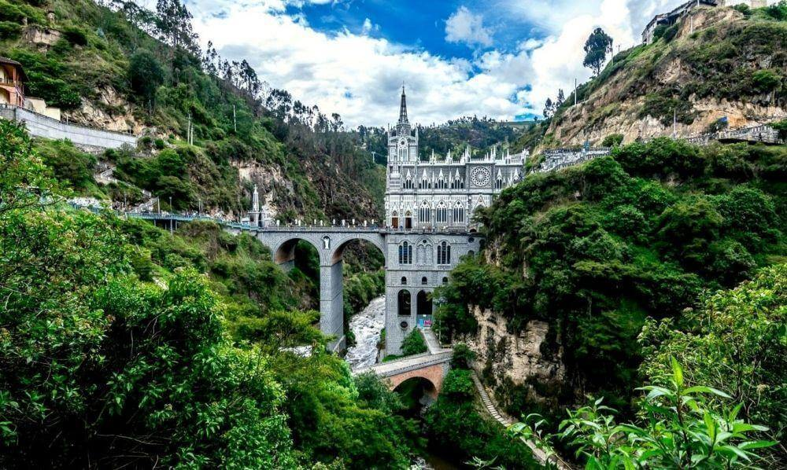
Сооружение служит обрамлением для наскальной иконы Senora de las Lajas.
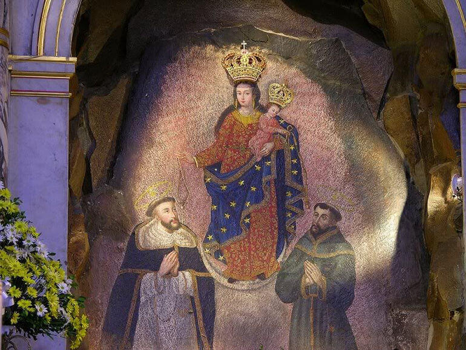
Здесь, на месте храма, была пещера, которая пользовалась дурной славой и местные жители старались не приближаться к ней. В 1745 году индианка Мария Муэсес со своей глухонемой дочерью укрылись от непогоды в одной из пещер. Каково же было удивление женщины, когда она услышала голос дочери и та ей сообщила, что на скале появилось изображение женщины с ребенком. Мать с дочерью приносили к иконе цветы, свечи, благодарили Богоматерь (именно ее лик проявился на стене) за исцеление.
Через некоторое время девочка серьезно заболела и умерла, Мария стала просить Богородицу воскресить девочку. Если верить легенде, девочка ожила, и с тех пор наскальная икона была признана исцеляющей. В день, когда Мария Муэсес рассказала пастырю о чудесном исцелении и воскрешении дочери, в пещере было проведено первое богослужение. Это случилось 15 сентября 1754 года. На этом месте возведен памятник женщине, которая открыла людям это удивительное место. В этот день отмечается праздник Марии, и ежегодно толпы паломником приезжают сюда поклониться образу Богоматери.
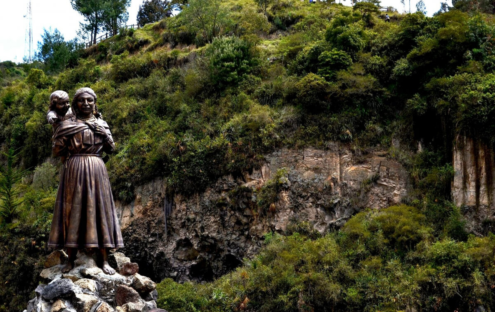
О том, насколько правдива легенда о целительных свойствах иконы, можно судить по обилию благодарственных табличек, прибитых к скале.
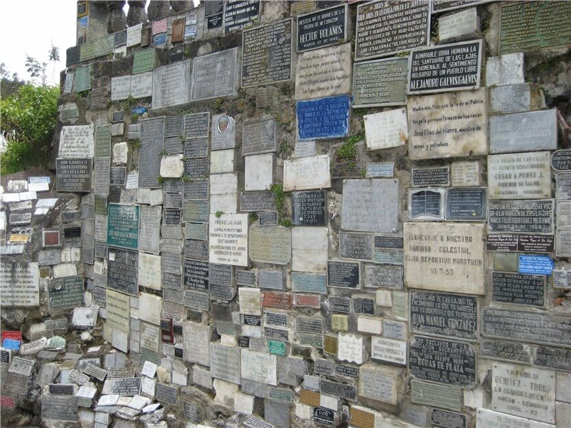
Так, благодаря красивой легенде и началось строительство храма в этом необычном месте.
Сначала здесь была построена всего лишь небольшая часовенка, куда люди приносили цветы в дар Богородице. Позже было возведено еще два храма (1796 – 1853), но и они тоже не могли вместить всех паломников. Вскоре было начато строительство еще одного, четвертого, храма (1916) на пожертвования паломников. Было решено выполнить базилику в неоготическом стиле и соединить обе стороны ущелья 30 –метровым арочным забором. Строительство церкви продолжалось в общей сложности более 30 лет, с 1916 – 1949 гг.
Кроме того, во время строительства четвертого собора предыдущие три были перестроены, так как не вписывались в общую архитектуру, и в стене ущелья был прорублен водопад, красотой которого могут любоваться все приезжающие в храм.
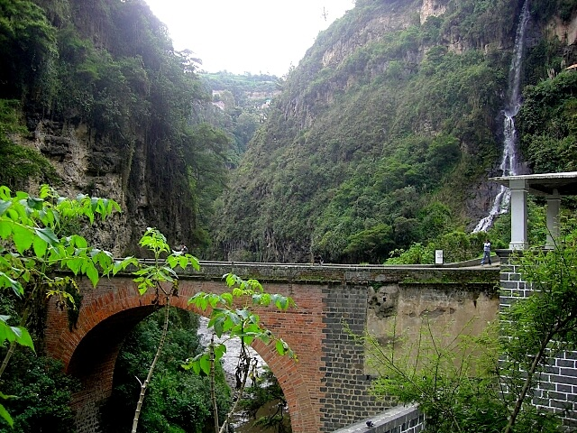
Однако, главным украшением храма является нерукотворная икона Девы Марии. Изображение Божьей Матери поражает своими размерами: высота – 3 м и длина – около 2-х метров. Одежда Богородицы раннее была украшена драгоценностями и золотыми и серебряными звездами, но за годы своего существования, украшения несколько раз похищались.
Сегодня образ дополнен короной и фигурами святых Франциска и Доминика. За все время существования, икону ни разу не реставрировали, однако краски до сих пор не утратили яркости. Ученые до сегодняшнего времени не смогли изучить состав вещества, из которого выполнен рисунок. Однако известно, что вещество пропитало камень более чем на метр.
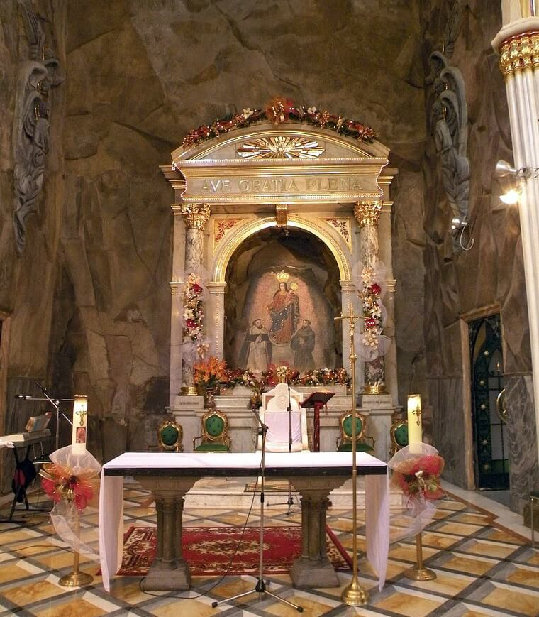
Название собора Лас-Лахас происходит от слова «лайя», горной породы в Андах, на которой и проявился образ Богоматери.
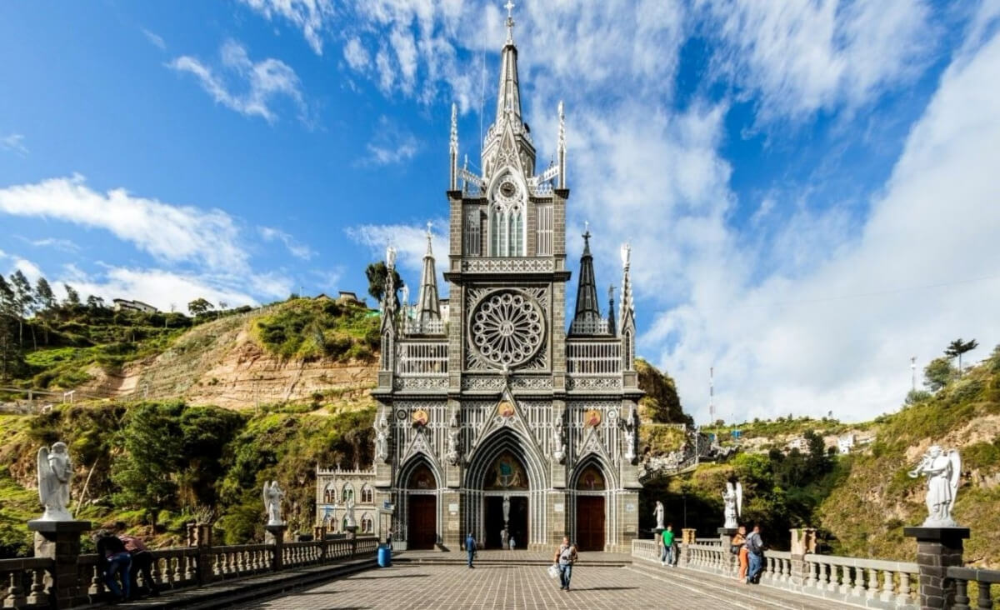
В настоящее время заботы о храме несут две францисканских общины, одна — колумбийская, другая — эквадорская. Таким образом, собор Лас-Лахас стал залогом мира и союза между двумя южноамериканскими народами.
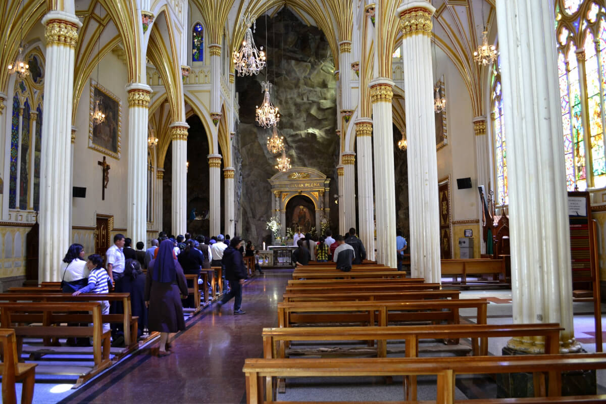
Собор Лас-Лахас является визитной карточкой Колумбии и по праву считается одним из прекраснейших архитектурных произведений в мире.
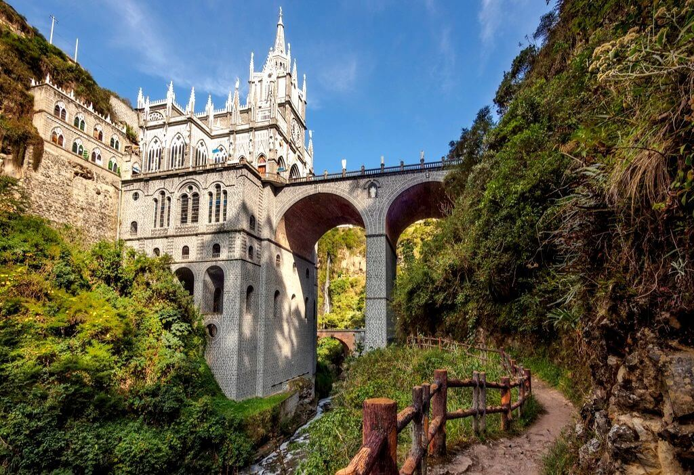
Храм в неоготическом стиле кажется легким и воздушным, особенно в сочетании с его расположением на арочном мосту. Многочисленные башенки, узкие стрельчатые окна делают его устремленным вверх, словно готовым взлететь, а контраст темного камня и белоснежного декора — как будто кружевным.
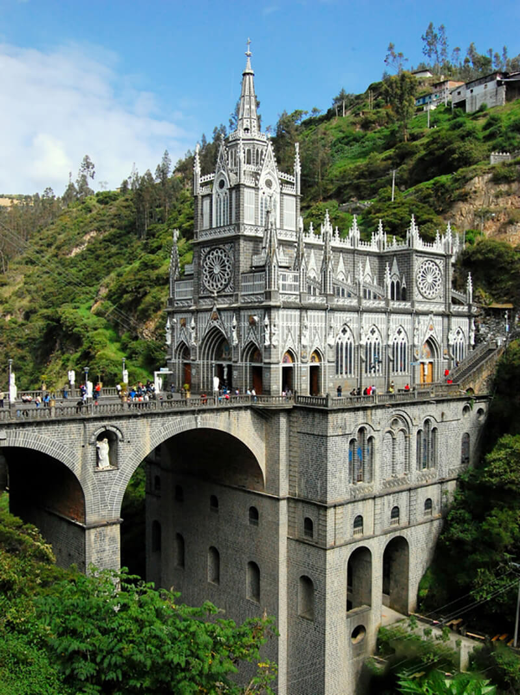
Внутри церковь частично отштукатурена, украшена колоннами и витражами, но приалтарная часть не тронута — это часть скалы, на которой видна икона.
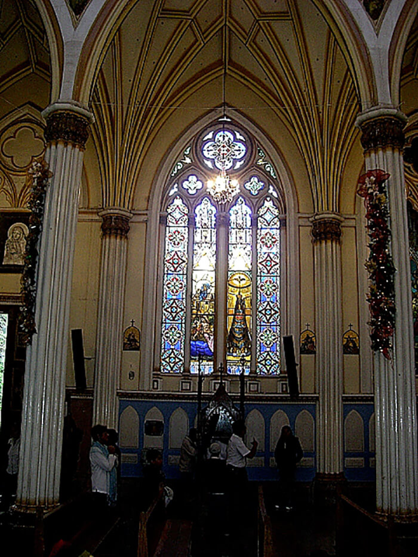
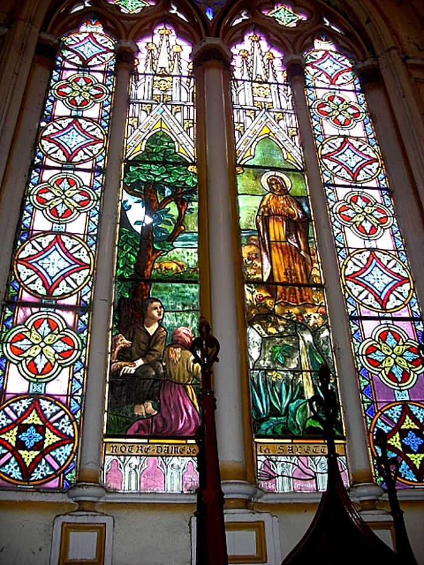
ВВЕРХ